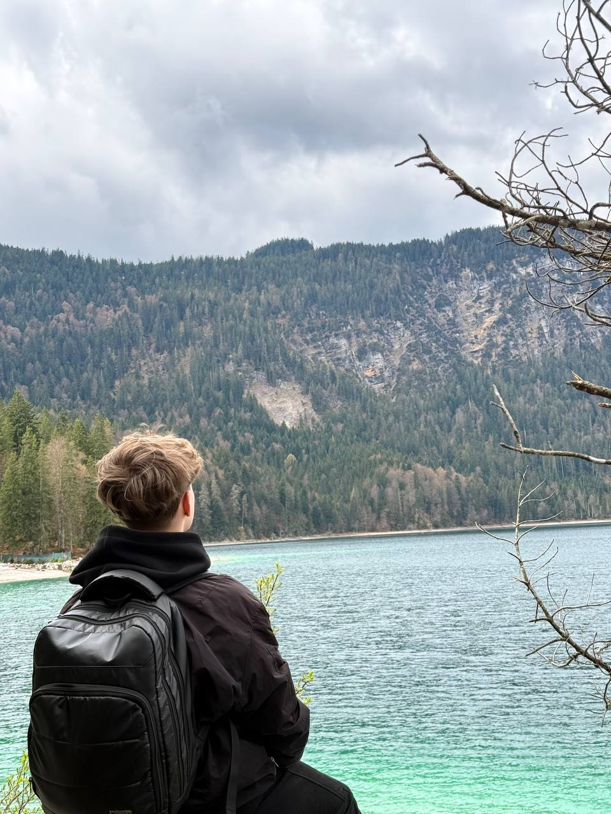

Привіт, я Артем!
Вітаю на моєму першому персональному сайті-портфоліо! Я активно вивчаю веб-розробку та комп'ютерну графіку. Мені подобається створювати щось нове своїми руками — чи то код для сторінки, чи то цифрові малюнки.
Цей сайт — мій особистий щоденник успіху, де я збираю вивчені технології, експериментую зі стилями CSS та HTML-розміткою. Крім комп'ютерних технологій, я люблю проводити час активно та відкривати нові горизонти.
🚴♂️ Моє улюблене хобі
Я дуже люблю кататися на велосипеді! Це не просто хобі, а крутий спосіб відпочити, розігнатися на повну швидкість, досліджувати нові місця та тренувати витривалисть. Кожна поїздка — це маленька пригода.